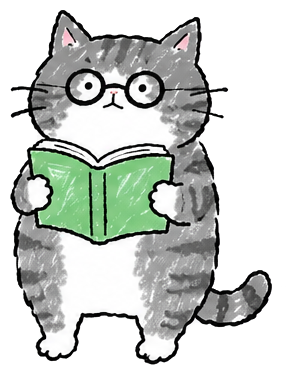

Focus. Earn a sticker. Fill your jar.專注一下，拿一張貼紙，把罐子裝滿。集中して、ステッカーをもらって、瓶をいっぱいに。집중하고, 스티커를 얻고, 병을 채워요.
A Pomodoro timer where every finished session drops a hand-drawn cat sticker into a jar you can shake. The focus app that never scolds you.一個番茄鐘：每完成一次專注，就有一張手繪貓貼紙掉進可以搖的罐子。永遠不會責備你的專注 App。セッションを終えるたびに、手描きの猫ステッカーが振れる瓶に落ちるポモドーロタイマー。決してあなたを叱らない集中アプリ。세션을 마칠 때마다 손그림 고양이 스티커가 흔들 수 있는 병에 떨어지는 뽀모도로 타이머. 절대 잔소리하지 않는 집중 앱.
What it is這是什麼どんなアプリ？어떤 앱인가요
- Set a focus length from 5 to 90 minutes. A little drawing fills in while you work.
- Reach your daily goal and a cat drops into the jar. There are dozens of cats to meet, plus seasonal ones.
- Write one line about each session. Your Book keeps them, day by day, with the stickers you paste in.
- Widgets, a Lock Screen timer and an Apple Watch app come along. iCloud keeps your jar on every device.
- 專注時間 5 到 90 分鐘自己選。工作的時候，一張小圖會慢慢畫好。
- 達成每日目標就掉一隻貓。有幾十隻貓可以遇見，還有季節限定的。
- 每次專注寫一行字。手帳會一天一天記下來，連同你貼上去的貼紙。
- 有小工具、鎖定畫面計時和 Apple Watch App。iCloud 讓罐子在每台裝置上都一樣。
- 集中時間は 5〜90 分から。作業のあいだに小さな絵が少しずつ描き上がります。
- 1 日の目標に達すると猫が瓶に落ちてきます。出会える猫は数十匹、季節限定も。
- セッションごとにひとこと書けます。ブックが貼ったステッカーと一緒に日ごとに残します。
- ウィジェット、ロック画面のタイマー、Apple Watch アプリつき。iCloud で瓶はどの端末でも同じに。
- 집중 시간은 5~90분 중에서. 일하는 동안 작은 그림이 조금씩 완성돼요.
- 하루 목표를 달성하면 고양이가 병에 떨어져요. 만날 수 있는 고양이는 수십 마리, 계절 한정도 있어요.
- 세션마다 한 줄을 적을 수 있어요. 북이 붙인 스티커와 함께 하루하루 간직합니다.
- 위젯, 잠금 화면 타이머, Apple Watch 앱이 함께 와요. iCloud로 병은 모든 기기에서 똑같아요.
No accounts. No ads. No analytics. Everything stays on your device.沒有帳號、沒有廣告、沒有分析工具。所有東西都留在你的裝置上。アカウントなし、広告なし、アナリティクスなし。すべてはあなたの端末の中に。계정도, 광고도, 분석 도구도 없어요. 모든 것은 내 기기 안에.